00–07
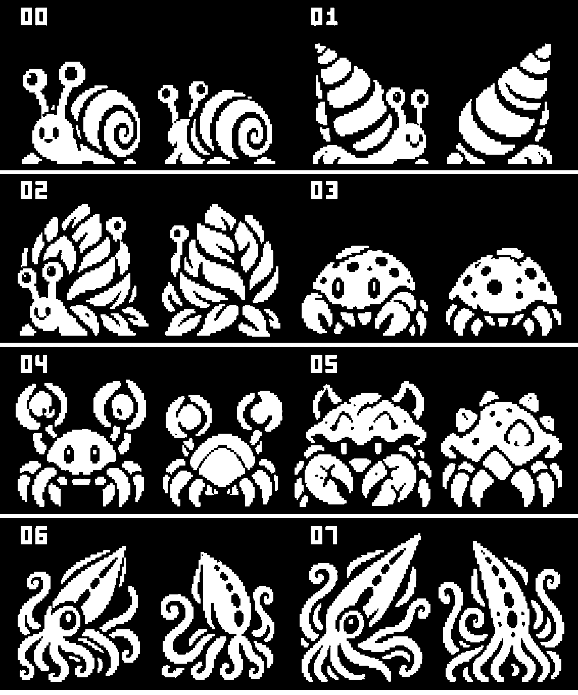
00 SquibbleSnail01 SquableSnail02 ScrambleSnail03 SkitterCrab04 ScatterCrab05 ShatterCrab06 squid07 bigsquid
Previous redraw
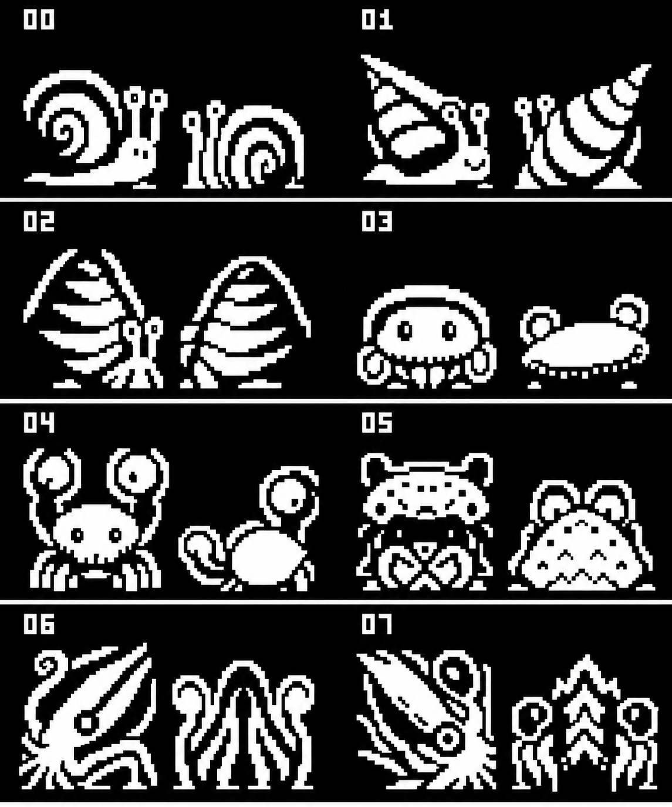
Original sprites
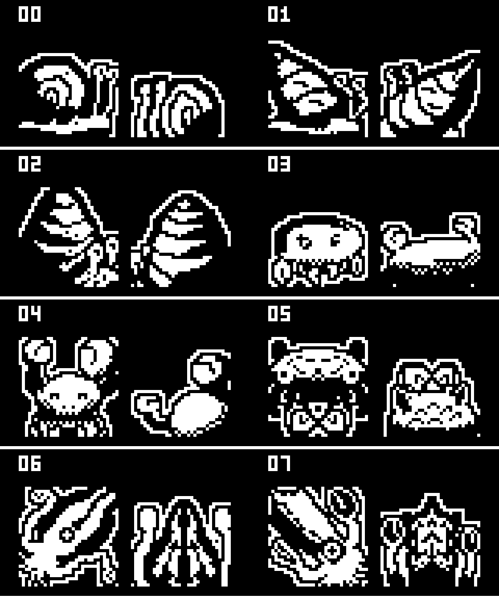
08–15
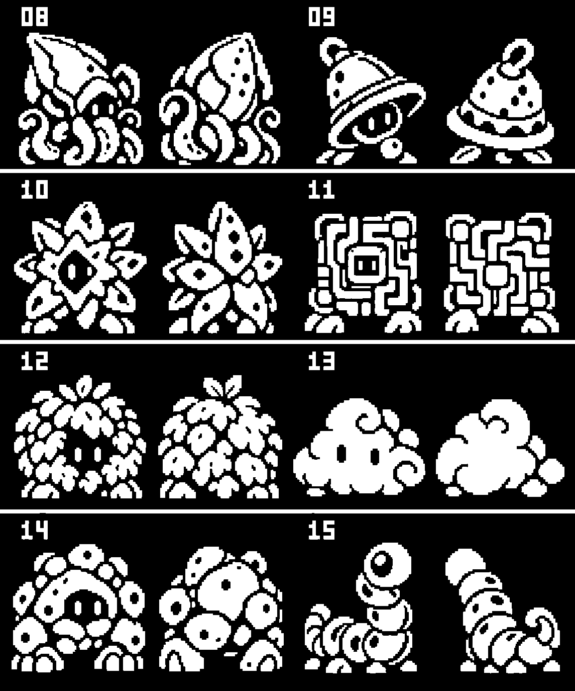
08 BiggestSquid09 bell10 ember11 cuircuit12 hedge13 cloud14 rock15 wiggleworm
Previous redraw
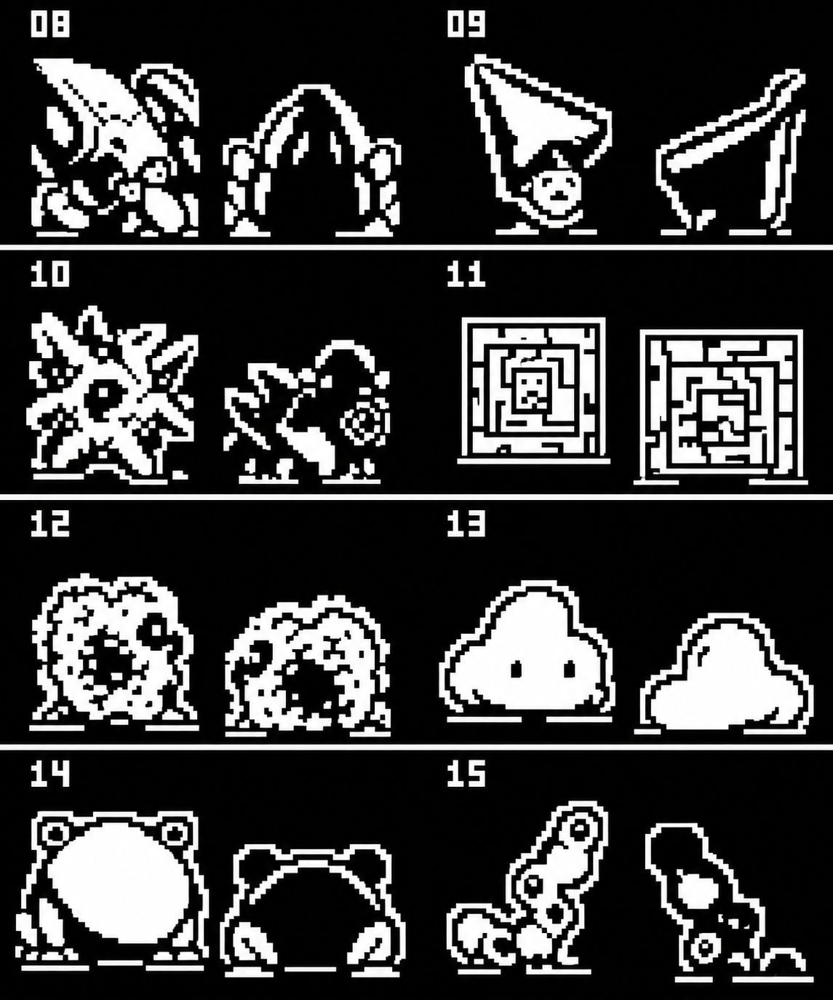
Original sprites
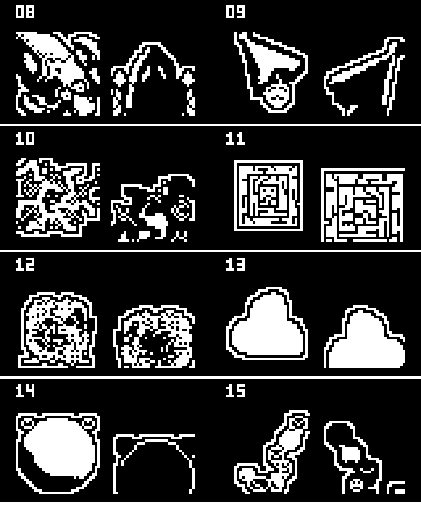
16–23
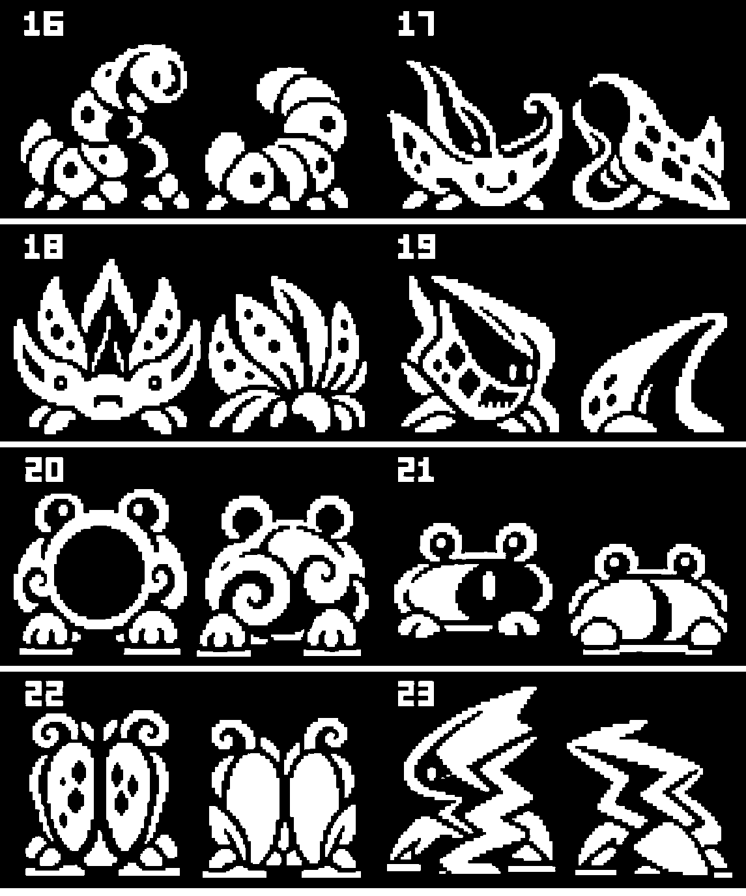
16 waggleworm17 skimskate18 skimray19 billow20 howl21 item22 item223 zip
Previous redraw
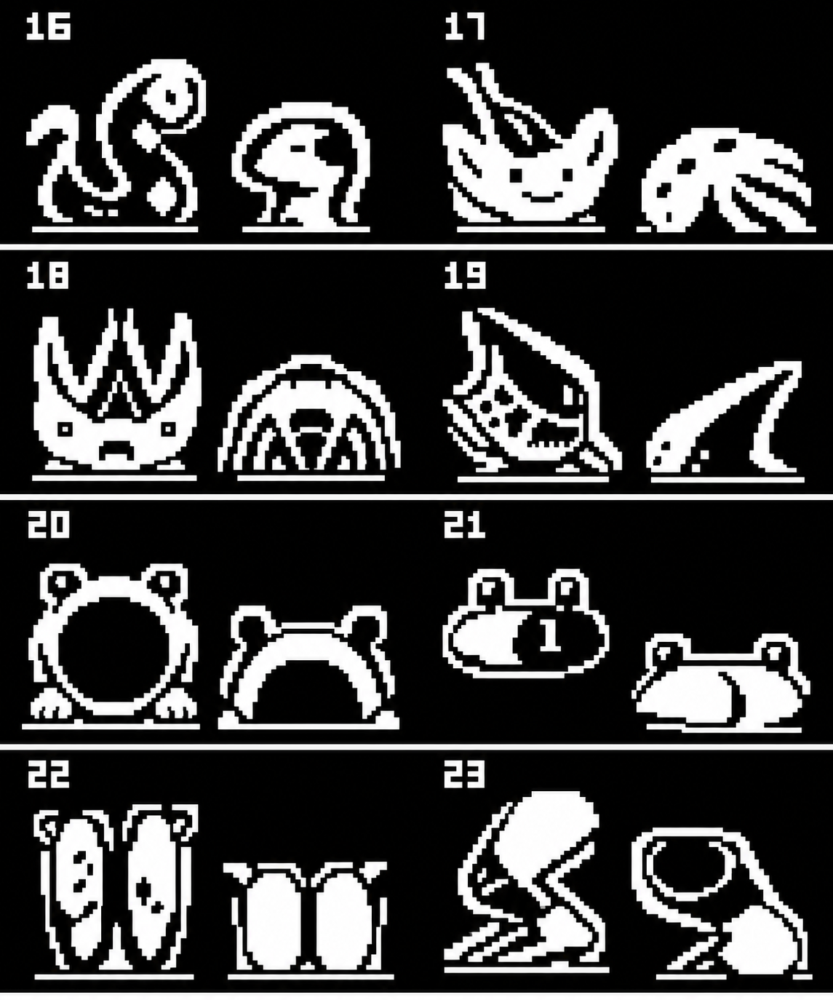
Original sprites
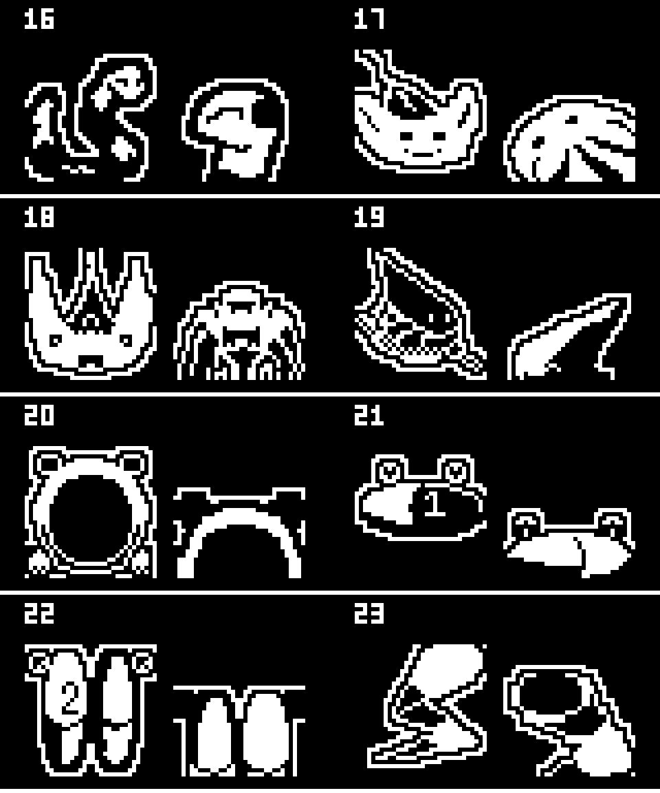
24–31
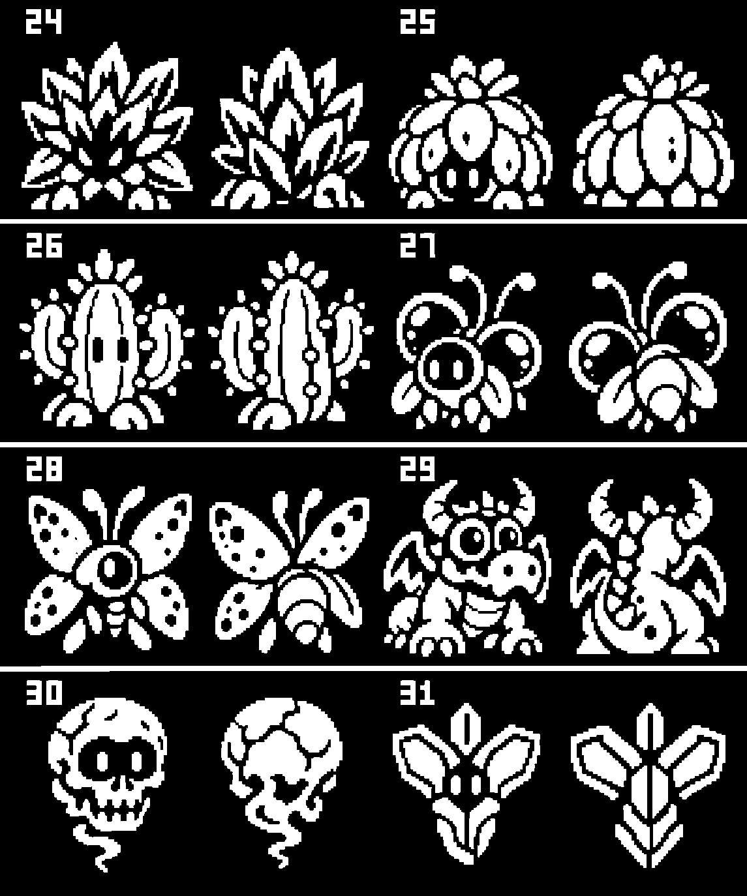
24 zap25 suculent26 cactus27 flickerfly28 flitfly29 dragon30 skull31 ardu
Previous redraw
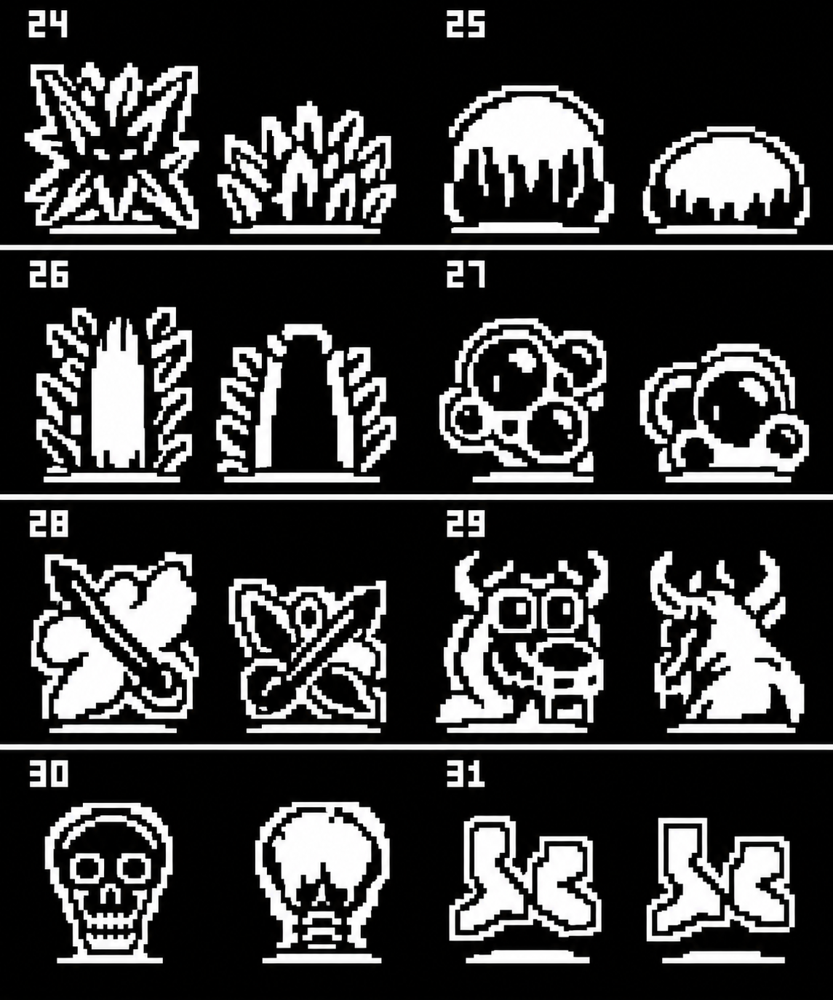
Original sprites
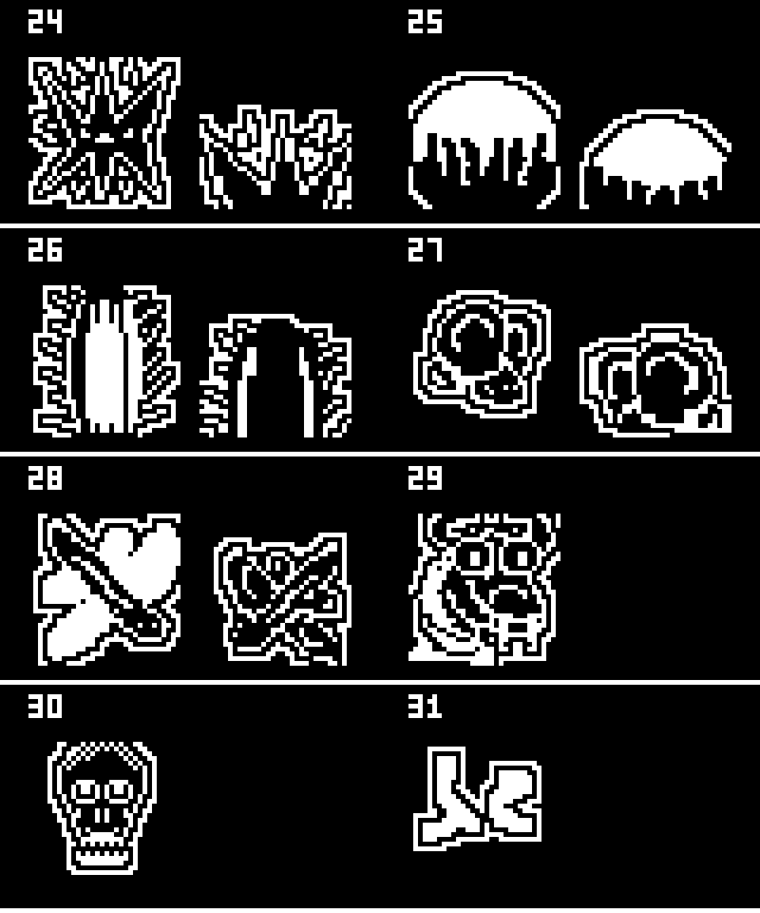